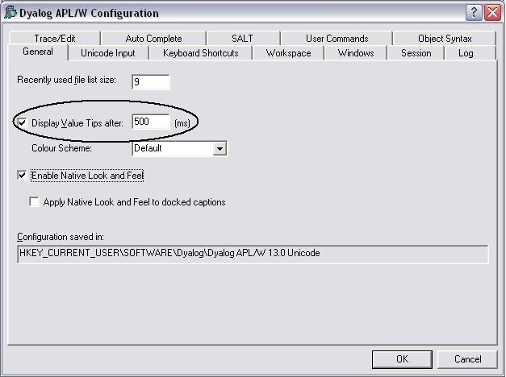

You may enable/disable Value Tips and select other options from the General tab of the Configuration dialog box as shown below.
You may experiment by changing the value of the delay before which Value Tips are displayed, until you find a comfortable setting.
Note that the colour scheme used to display the Value Tip for a function need not necessarily be the same colour scheme as you use for the function editor.
